Debugging¶
Debug launch configurations¶
To debug a program a debug launch configuration must be created. Most of the default settings for a debug launch configuration can be left as they are but a few needs to be manually configured. Use the example projects and debug launch configurations as a guide to creating new debug launch configurations.
Select the project in the Project Explorer and from the:
![digraph { graph [rankdir="LR", ranksep=.01, bgcolor=transparent]; node [fontname="Verdana", style=filled, fillcolor=white, fontsize="9", shape="rectangle", width=.1, height=.2, margin=".04,.01"]; edge [arrowsize=.7]; "SoftConsole Menu toolbar" -> "Run" -> "Debug Configurations"; }](../_images/graphviz-0fc3bd0b2230060abc572338136b145064ec8e8a.png)
In the Debug Configurations dialog select GDB OpenOCD Debugging and click on the New launch configuration button which will create a new debug launch configuration for the previously selected project.
For PolarFire SoC Renode emulation please refer to the README provided with the PolarFire SoC/PSE example project(s) in the example workspace.
On the Main tab ensure that the
C/C++ Applicationfield contains the correct executable name.Note
Using forward slashes in paths here aids portability of projects and debug launch configurations between Windows and Linux:

On the Debugger tab, it is critical that the Config options field contains the correct command line options/script to be passed to OpenOCD. The example settings here work for SmartFusion or SmartFusion2 targets where the program uses only eSRAM and/or eNVM – if the
DEVICEsetting is modified to match the actual target device (SmartFusion A2FXXX or SmartFusion2 M2SXXX where XXX is the three-digit device size designator). Further details about these options are provided elsewhere in this documentation.--command "set DEVICE ..."
is mandatory for SmartFusion and SmartFusion2 Cortex-M3 targets but is optional for Cortex-M1 and Mi-V RISC-V targets.
For a Cortex-M1 target the
Config optionsshould be:--file board/microsemi-cortex-m1.cfg
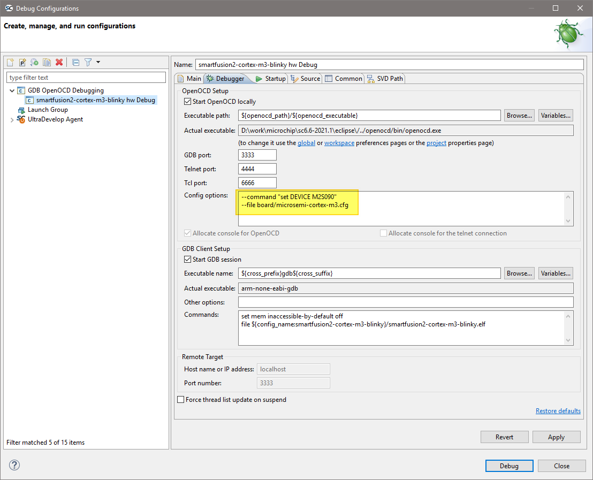
For a RISC-V target the Debugger tab settings must be configured as follows:
--file board/microsemi-riscv.cfg
or when targeting the HiFive Unleashed Platform using the integrated FTDI JTAG debug probe (rather than FlashPro):
--file board/microsemi-sifive-hifive-unleashed.cfg
set mem inaccessible-by-default off set $target_riscv = 1
Important
This is necessary even if there are some cases where it seems to work correctly (and previous SoftConsole examples did not require this command)!
Additionally setting the architecture (do not remove the previous commands such as set $target_riscv = 1):
set architecture riscv:rv32
Note
If in previous documents and projects was
set arch riscv:rv32used, then it can be considered as analogous. Thearchis an abbreviation forarchitectureand does the same function.And when targeting 64-bit PolarFire SoC emulation model:
set architecture riscv:rv64
Note
If in previous documents and projects was
set arch riscv:rv64used, then it can be considered as analogous. Thearchis an abbreviation forarchitectureand does the same function.When the binary elf file is large then it might sometimes on targets cause a timeout message, to suppress these the timeout can be changed:
set remotetimeout 7
Existing workspace examples should be used to see how these are configured:
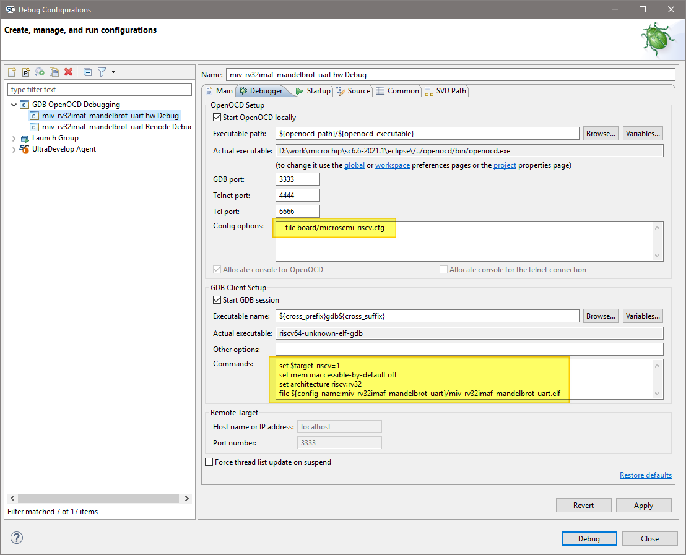
On the
Startuptab the default settings should be configured as shown below and these are the default settings so do not change them unless necessary and you understand what effect these changes will have.![digraph { graph [rankdir="LR", ranksep=.01, bgcolor=transparent]; node [fontname="Verdana", style=filled, fillcolor=white, fontsize="9", shape="rectangle", width=.1, height=.2, margin=".04,.01"]; edge [arrowsize=.7]; "Debug Configuration" -> "Initialization Commands" -> "check 'Initial Reset'"; }](../_images/graphviz-bcd06702ab72f8ed70caade39b7720eb44249753.png)
![digraph { graph [rankdir="LR", ranksep=.01, bgcolor=transparent]; node [fontname="Verdana", style=filled, fillcolor=white, fontsize="9", shape="rectangle", width=.1, height=.2, margin=".04,.01"]; edge [arrowsize=.7]; "Debug Configuration" -> "Initialization Commands" -> "set type to 'init'"; }](../_images/graphviz-2b6e81f3d8f59917738fcd0777b17a1381faa122.png)
Load symbols/executable should be configured as shown.
Even when targeting embedded or external RAM:
In the section:
set breakpoint at main and
Continueshould normally be checked although can be modified if, for example, an initial breakpoint somewhere other than main() is required or startup code executed beforemain()needs to be debugged.For PolarFire SoC Renode emulation please refer to the README provided with the PolarFire SoC/PSE example project(s) in the example workspace.
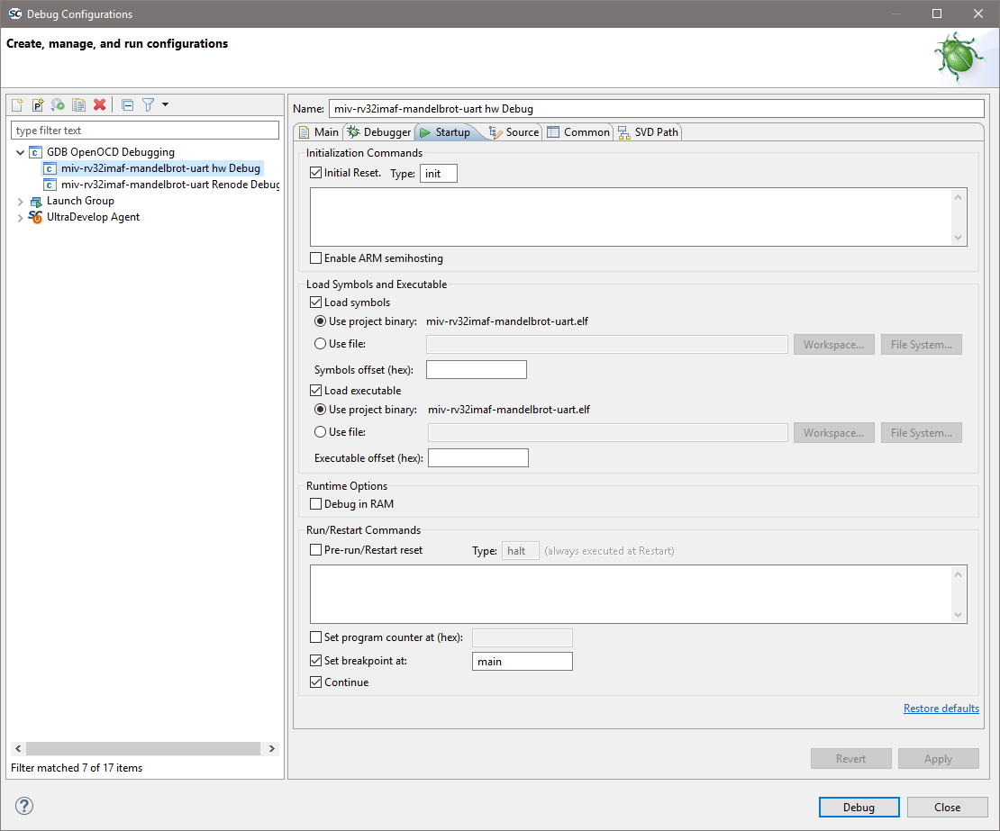
By default the
Save asis set to:Local filecauses the debug launch configuration to be saved into the workspace. However, if theShared fileoption is selected (the default name can be accepted) then the debug launch configuration instead gets saved into the project which aids portability as it means that the debug launch configuration moves in tandem with the project (e.g. when copying or exporting/importing the project).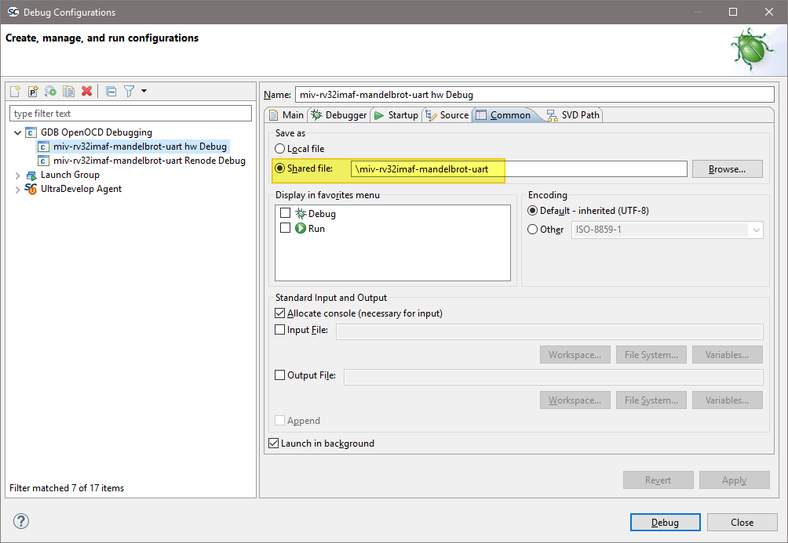
OpenOCD command line options and scripts¶
As explained above, it is important that the correct command line options/scripts are passed to OpenOCD via the:
This section explains these settings.
Note
Commands can be specified using
--command ...or-c ....Multiple commands can be specified individually
--command "set DEVICE M2S090" --command "set JTAG_KHZ 1000" --file board/microsemi-riscv.cfg
or together separated by semi-colons
--command "set DEVICE M2S090; set JTAG_KHZ 1000" --file board/microsemi-riscv.cfg
Warning
All --command ... settings mentioned above must be placed before the --file ... setting.
The DEVICE and JTAG_KHZ need to be set before calling the --file, but setting the port needs to be added after the --file like this:
–command “set JTAG_KHZ 1000” –file board/microsemi-riscv.cfg –command “microsemi_flashpro port usb86709”
Board scripts¶
The board script describes the relevant aspects of the target hardware to OpenOCD. A number of example scripts
are provided and are stored in <SoftConsole-install-dir>/openocd/share/openocd/scripts. The
following list enumerates these and outlines the context in which each of them can be used. Remember that the
target device must also be correctly specified in the debug launch configuration.
RISC-V
board/microsemi-riscv.cfg: for targeting RISC-V.board/microsemi-sifive-hifive-unleashed.cfg: for targeting the HiFive Unleashed Platform
The following outlines the normal correlation between the linker script used to link the program and the OpenOCD board script used for debugging:
RISC-V Hardware Abstraction Layer (HAL) and PolarFire SoC MPFS_HAL (previously known as PSE_HAL)
Linker Script
Refer to the Mi-V RISC-V HAL, PolarFire SoC MPFS HAL and the various RISC-V example projects provided for details of the example linker scripts provided.
OpenOCD board script
board/microsemi-riscv.cfg
FlashPro JTAG speed¶
The SoftConsole OpenOCD scripts use a default JTAG clock speed of 6MHz. If this needs to be overridden, then it can be specified (in kHz) alongside the target device – e.g. to use 1MHz (1000kHz):
--command "set DEVICE M2S090; set JTAG_KHZ 1000"
or
--command "set DEVICE M2S090" --command "set JTAG_KHZ 1000"
The JTAG_KHZ needs to be set before invoking the other commands such as: board/microsemi-riscv.cfg
Warning
Do not change the JTAG clock speed unless absolutely necessary and only if you understand the implications and possible pitfalls of doing so.
Other OpenOCD options¶
In some cases, where OpenOCD debugging does not work as expected it may be useful to add the –debug n (where n is a debug level between 0 and 3) or simply -d option to the debug launch configuration. See also the OpenOCD User’s Guide for other OpenOCD options and commands: https://openocd.org/pages/documentation.html.
SoftConsole OpenOCD script parameters¶
Several parameters can be used to configure/control how the SoftConsole OpenOCD scripts operate. Refer to the comments in the example scripts for more details.
<SoftConsole-install-dir>/openocd/share/openocd/scripts/interface/microsemi-flashpro.cfg<SoftConsole-install-dir>/openocd/share/openocd/scripts/target/microsemi-riscv.cfg<SoftConsole-install-dir>/openocd/share/openocd/scripts/target/microsemi-sifive-hifive-unleashed.cfg<SoftConsole-install-dir>/openocd/share/openocd/scripts/target/microsemi-olimex-ocd-riscv.cfg<SoftConsole-install-dir>/openocd/share/openocd/scripts/target/microsemi-olimex-tiny-h-riscv.cfg<SoftConsole-install-dir>/openocd/share/openocd/scripts/target/microsemi-olimex-tiny-riscv.cfg
Using a debug session¶
Launching a debug session¶
Select the project in the Project Explorer, right click on it and from the context menu select Debug As > Debug Configurations, select the relevant debug launch configuration and click Debug.
Memory Monitor¶
The default Memory Monitor view rendering is Hex which may render values in big-endian rather than little-endian form. If this is the case, then switch to Traditional or Hex Integer rendering which renders values properly as littleendian.
Console view¶
During a debug session SoftConsole can display several different consoles in the Console view. By default, the OpenOCD console is displayed showing OpenOCD output:
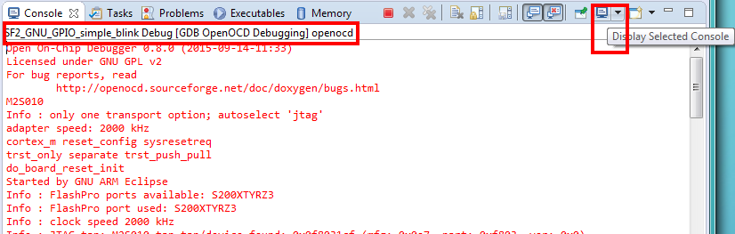
The highlighted Display Selected Console toolbar button allows different consoles to be selected:
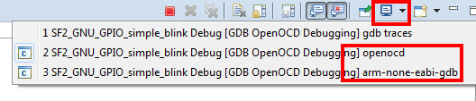
The openocd and GDB consoles are usually the ones of most interest. If semihosting is used the I/O is done via the GDB console. The GDB console must be the active console to manually enter GDB commands.
Built-in serial terminal view¶
SoftConsole includes a built-in serial terminal view which obviates the need to run a separate serial terminal emulator when connecting to a target board using a UART. The plug-ins used to implement this view are preinstalled. Refer to this blog post for information on how to show and configure the terminal view (but skip the parts dealing with plug-in installation as this is already done):
In order for the serial terminal to list the relevant serial/COM ports, especially for USB serial ports, the relevant OS drivers may need to be installed. Refer to the relevant hardware/board documentation for more details.
Debug using a specific FlashPro programmer¶
By default, SoftConsole will debug using the first FlashPro5 programmer that it detects. If there is no FlashPro5 connected, then it will use the first FlashPro3/4 that it detects.
When there is only one FlashPro programmer connected and not used by any other application then SoftConsole will automatically use that. In some cases, more than one FlashPro programmer will be connected in which case SoftConsole needs to be told which one to use for debugging.
A specific example of this is when using the M2S090 Security Evaluation Kit board. On this board J5 is the FlashPro connector normally used for FlashPro programming of the FPGA and SoftConsole debugging. However, J18 is also an on-board SPI only FlashPro5 programmer which can be used for programming the FPGA but cannot be used for SoftConsole debugging. J18 is also used for access to serial ports on the target design.
In this case if both J5 and J18 are connected to the host computer on which SoftConsole is running then SoftConsole needs to be told to use the former for debugging.
When OpenOCD runs, it lists the FlashPro programmers that it finds and indicates which one it uses by default – e.g:
Open On-Chip Debugger
Licensed under GNU GPL v2
For bug reports, read
http://openocd.sourceforge.net/doc/doxygen/bugs.html
M2S010
Info : only one transport option; autoselect 'jtag'
adapter speed: 2000 kHz
cortex_m reset_config sysresetreq
trst_only separate trst_push_pull
do_board_reset_init
Info : FlashPro ports available: usb86709, S200XTYRZ3
Info : FlashPro port used: S200XTYRZ3
To use a specific FlashPro device when there is more than one connected in the debug launch configuration change the following:
--file board/microsemi-riscv.cfg
to this which specifies which FlashPro programmer/port to use for debugging:
--file board/microsemi-riscv.cfg
--command "microsemi_flashpro port usb86709"
A partial port name can be specified and the first FlashPro port matched that starts with the specified string will be used. (The string comparison is case insensitive). This is useful, for example, where there are two FlashPro5 programmers attached – one standalone (e.g. SXXXXX) and one embedded e.g. EXXXXX). In this case the embedded one can be selected by simply specifying:
...
--command "microsemi_flashpro port e"
Note
The microsemi_flashpro_port command must appear after the board script has been specified
because this script sources the interface/microsemi-flashpro.cfg script.
Debugging using a non FlashPro JTAG interface¶
By default, the Microsemi OpenOCD board scripts (e.g. board/microsemi-riscv.cfg) specify that a FlashPro programmer will be used for debugging:
# FlashPro
source [find interface/microsemi-flashpro.cfg]
# Device
source [find target/microsemi-riscv.cfg]
# Board specific initialization
proc do_board_reset_init {} {
}
This is akin to assuming that all boards come with an on-board FlashPro programmer even if some use a discrete/external programmer. This is the normal and recommended debugging setup. In this case the debug launch configuration will look something like this:
--file board/microsemi-riscv.cfg
However, it is possible to use other JTAG probes that are supported by OpenOCD. As an example, to debug using the Olimex ARM-USB-TINY-H.
Warning
Use 3rd party JTAG probes at your own risk. Make sure to use the correct jumper settings and correct JTAG pinout. OpenOCD is supporting many JTAG probes, but they are not tested from within SoftConsole and SoftConsole support might not be able to help you with issues caused by using 3rd party probe. Using wrong pinout or wrong jumper settings might cause damage to the hardware.
Note
On Windows it’s required to run Zadig tool and replace Olimex drivers with WinUSB before continuing. Be careful and use zadig at your own risk!
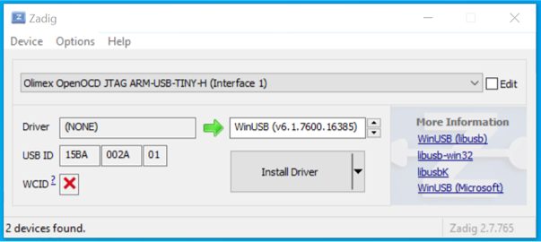
In the debug launch configuration replace the
--file microsemi-riscv.cfgwith the following:--file microsemi-olimex-tiny-h-riscv.cfg
Ensure that the board’s jumper[s] such as JTAG_SEL is configured to use external/standalone JTAG probe instead of the embedded FlashPro. For example, on the Icicle board it means to open the
J9jumper.Connect the Olimex ARM-USB-TINY-H programmer USB end to the.
Make sure the Olimex JTAG signals are connected correctly to the FlashPro signals. This can be achieved by buying/making own adapter board, or by using female-to-female jumper wires.
Olimex pinout: 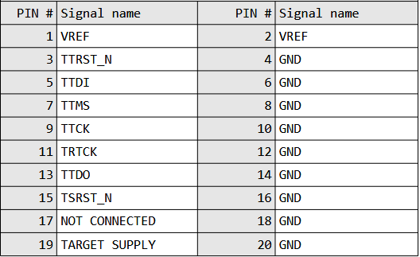
FlashPro pinout: 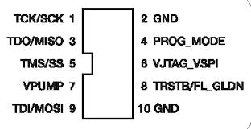
Connecting Olimex pins to pins on the FlashPro header:
Olimex ARM-USB-TINY-H pin Target board FlashPro JTAG pin 1 (VREF) 6 (VJATG_VSPI) 3 (TTRST_N) 8 (TRSTB/FL_GLDN) 5 (TTDI) 9 (TDI/MOSI) 7 (TTMS) 5 (TMS/SS) 9 (TTCK) 1 (TCK/SCK) 13 (TTDO) 3 (TDO/MISO) 10 (GND) 2 (GND) 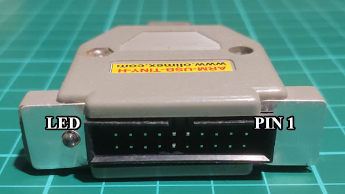
The
microsemi-olimex-tiny-riscv.cfgalready assumes that the integrity of the signals will not be optimal and sets the JTAG TCK speed to 2MHz, this can be overridden by setting theJTAG_KHZvalue before calling themicrosemi-olimex-tiny-h-riscv.cfgfile. However users might be surprised that the debug latency and speeds might be satisfactory even at 2MHz. If experiencing crashes in the debug sessions, then the TCK speed might have to be lowered even more, for example: 1MHz withset JTAG_KHZ 1000.Debugging can now be done via the Olimex ARMUSB-TINY-H device.
A similar approach can be taken with other JTAG programmers supported by OpenOCD. Study the present CFG files to see how to make custom ones.
How to connect to/debug a running program¶
In some situations it is desirable to connect to a program already running on the target without resetting the target, loading the program, executing from the startup code, breakpointing at main() etc. To enable this form of debugging:
The program/project built must match the program running on the target – i.e. the same code, linker script etc.
On the Startup page of the debug launch configuration…
Clear the Initial Reset checkbox
In the Initialization Commands text field enter
monitor haltClear the Load Symbols and Executable > Load Executable checkbox
With these settings when the debug session is launched SoftConsole the program remains running and the Suspend “pause” button can be used to halt it and thereafter normal debugging operations can be performed.
Call stack¶
Normally call stacks can be ignored, but they are very useful when troubleshooting pre-existing conditions. When using the recommended workspace and its Develop and Debug perspective then this should be in the bottom-left section of
the screen. It can be opened (if it got previously closed) with :
![digraph {
graph [rankdir="LR", ranksep=.01, bgcolor=transparent];
node [fontname="Verdana", fontsize="9", shape="rectangle", width=.1, height=.2, margin=".04,.01", style=filled, fillcolor=white];
edge [arrowsize=.7];
"SoftConsole Menu toolbar" -> "Window" -> "Show view" -> "Debug"
}](../_images/graphviz-ffffad17a2f14987122d1b446b96b6e6663f2f5f.png)
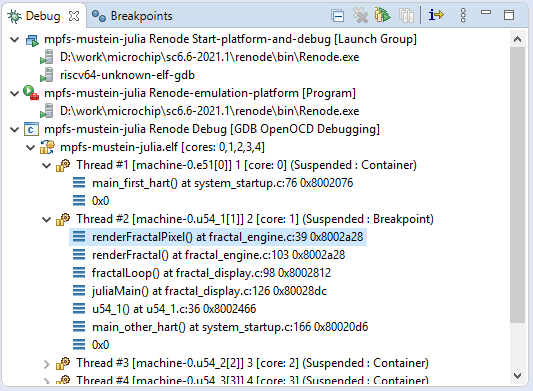
The figure above shows how nested the calls are, clicking on each will jump to the exact line of code from where the child stack was invoked and it will even show the content of local variables at that given time. This is very useful when troubleshooting what conditions lead to the given breakpoint. Using it with ISR handlers can show what the application was processing when the IRQ happened. Together with conditional breakpoints which makes debugging even easier.
Conditional breakpoints¶
A conditional breakpoint can be enabled by holding CTRL and double-clicking on a regular breakpoint:
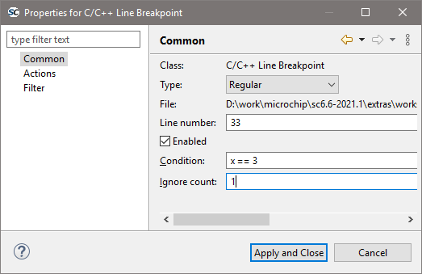
The figure above shows a conditional breakpoint which will break on a second event when variable x is equal to 3. The
first event when this condition is met is ignored because Ignore count is set to 1. This allows to create a complex
condition where the code should break and together with call stack can be troubleshoot why and how this event
happened. Debugging intermittent issues with these features is easier.
Note
This is very useful for both a Renode and HW targets as well.
Troubleshooting¶
If the debug session fails to run as expected, then check the following:
On Linux, was the udev rules file installed and activated in order to grant non-root access to users in the relevant group (usually plugdev)?
Is a FlashPro device connected (FlashPro 5 on Linux, FlashPro3/4/5 on Windows)?
Is there more than one FlashPro device connected? If so SoftConsole may not be using the correct one. If you want to use a specific one of several FlashPro devices connected, then you can add
--command "microsemi_flashpro port <fp-port-name>"to the OpenOCD command line options.On Windows did a previous FlashPro3/4 debug session fail leaving OpenOCD (
openocd.exeorfpserver.exe) running becauseabiactel.dlldid not exit cleanly thus blocking access to the FlashPro device? Check Task Manager/ProcessExplorer for openocd.exe and if it’s still running then unplug the FlashPro USB cable and then reattach it and OpenOCD should terminate.If the debug session starts but the program does not run/behave as expected, then check that the project was updated to match the target hardware by having the Libero SoC generated firmware and
drivers_configcopied in before rebuilding.Ensure that the relevant CMSIS/HAL firmware core is used.
Mismatching Mi-V RV32 project configuration and the target¶
Currently there are two Mi-V classes of soft processors supported in SoftConsole, the newer one MIV_RV32 and legacy soft processor in these variants: MIV_RV32IMA_L1_AHB, MIV_RV32IMA_L1_AXI and MIV_RV32IMAF_L1_AHB. If a project is using floating-point F extension (and not emulating it in software), then it requires the legacy soft processor.
Because the legacy soft processor is using older memory map the applications are not compatible between each other. The bundled example miv-rv32i-systick-blinky supports both and has custom configuration for each, the miv32i and miv32ic are for the newer core and use the ESS memory map, while miv32ima is for the legacy core and uses older memory map. The current RV32 HAL is supporting both and legacy support can be enabled with MIV_LEGACY_RV32 define, while in project’s settings the include paths can point to a legacy board. This means that it’s very important what target design is used with what configuration (in case of Renode even the correct group launcher has to be used). Each project can be setup differently, but for the bundled miv-rv32i-systick-blinky example it’s as follows:
| Configuration | Target | Launcher to debug with Renode |
|---|---|---|
| miv32i-Debug | new RV32 | miv-rv32i-systick-blinky Renode-rv32i Start-platform-and-debug |
| miv32i-Release | new RV32 | miv-rv32i-systick-blinky Renode-rv32i Start-platform-and-debug |
| miv32ima-Debug | legacy RV32 | miv-rv32i-systick-blinky Renode-legacy-rv32 Start-platform-and-debug |
| miv32ima-Release | legacy RV32 | miv-rv32i-systick-blinky Renode-legacy-rv32 Start-platform-and-debug |
| miv32imc-Debug | new RV32 | miv-rv32i-systick-blinky Renode-rv32i Start-platform-and-debug |
| miv32imc-Release | new RV32 | miv-rv32i-systick-blinky Renode-rv32i Start-platform-and-debug |
Note
When targeting real Hardware, then all the configurations are using the same launcher miv-rv32i-systick-blinky Hw Debug. However the connected board must have matching design. For the new core it needs to be 2022.1 release of MIV_RV32 with ESS memory map (such as DGC2 config). And for the legacy core it needs to be 2022.1 release of MIV_RV32IMA_L1_AHB, MIV_RV32IMA_L1_AXI or MIV_RV32IMAF_L1_AHB (for example CFG1 config). The reset vector for legacy core changed in this release and using older builds of this core is not recomended.
Using wrong target with wrong build configuration and wrong launcher might produce cryptic looking messages/issues. Because the new memory map is overlapping partially with the old memory map the application writing to PLIC on the new core might cause writes to UART/GPIO/TIMER if run on legacy core. While application targeting legacy core might end up writing to PLIC on the new core instead of UART/GPIO/TIMER.
Example error messages and issues¶
If you encounter any of these issues, then they might be caused by mismatch between what the application targets and what it is run againts.
Running legacy Mi-V Renode platform with application targeting the new core¶
Renode has been started successfully and is ready for a gdb connection.
(PF Mi-V RV32 legacy) 18:50:06.1893 [WARNING] sysbus: [cpu: 0x80000828] WriteDoubleWord to non existing peripheral at 0x200BFFC, value 0x0.
18:50:08.5992 [WARNING] sysbus: [cpu: 0x80001198] WriteByte to non existing peripheral at 0x71000008, value 0x1A.
18:50:08.5992 [WARNING] sysbus: [cpu: 0x80001198] WriteByte to non existing peripheral at 0x7100000C, value 0x1.
18:50:08.6011 [WARNING] sysbus: [cpu: 0x800011A0] ReadByte from non existing peripheral at 0x71000010.
Running new Mi-V Renode platform with application targeting the legacy core¶
Renode has been started successfully and is ready for a gdb connection.
(PF Mi-V RV32 (IMC)) 18:54:42.2117 [WARNING] sysbus: [cpu: 0x80000F38] WriteByte to non existing peripheral at 0x70001008, value 0x1A.
18:54:42.2127 [WARNING] sysbus: [cpu: 0x80000F38] WriteByte to non existing peripheral at 0x7000100C, value 0x1.
18:54:42.2147 [WARNING] sysbus: [cpu: 0x80000F40] ReadByte from non existing peripheral at 0x70001010.
Running legacy HW design with application targeting the new core¶
Might not reach the main breakpoint, nor the entry entry, disassembly tab showing unimplemented instructions. Or get into exception trap in early stages of the application.
Running new HW design with application targeting the legacy core¶
Might get stuck in a infinite loop in the UART driver trying to read back the ready status:
/* Wait for UART to become ready to transmit. */
do {
tx_ready = HAL_get_8bit_reg( this_uart->base_address, STATUS ) &
STATUS_TXRDY_MASK;
} while ( !tx_ready );
/* Send next character in the buffer. */
HAL_set_8bit_reg( this_uart->base_address, TXDATA,
(uint_fast8_t)p_sz_string[char_idx] );
char_idx++;